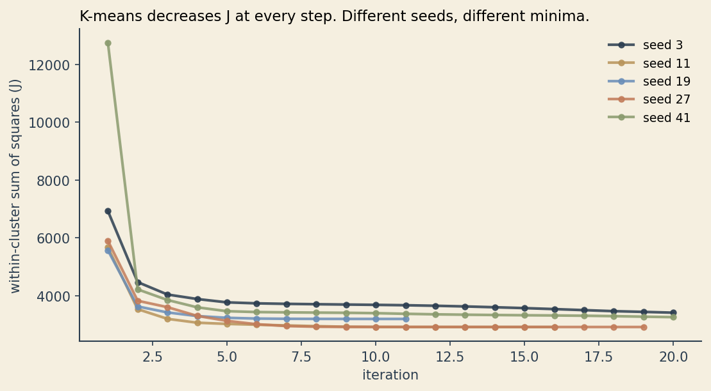
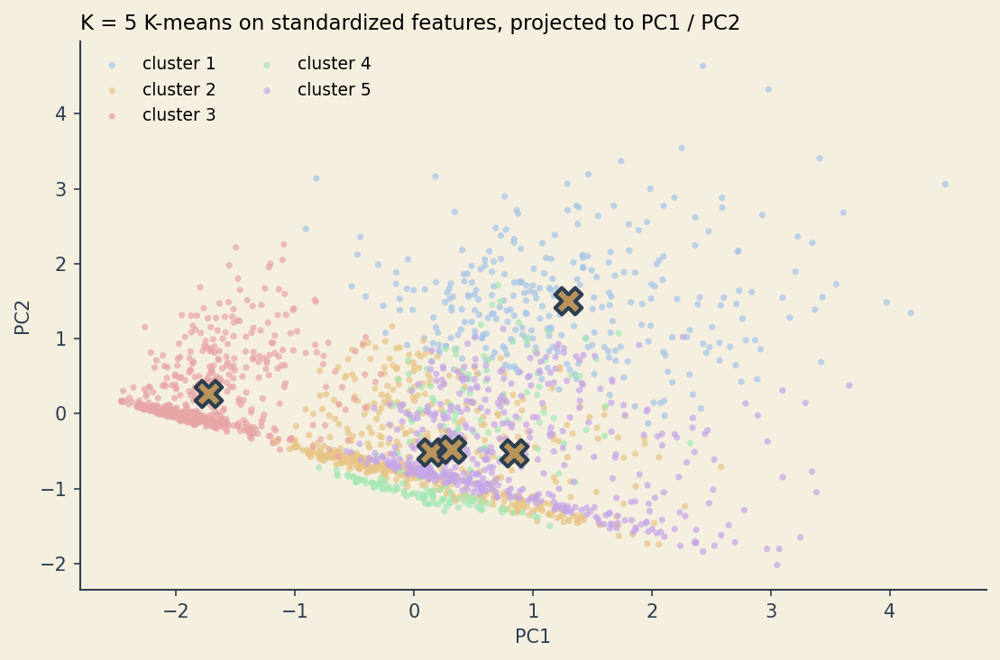
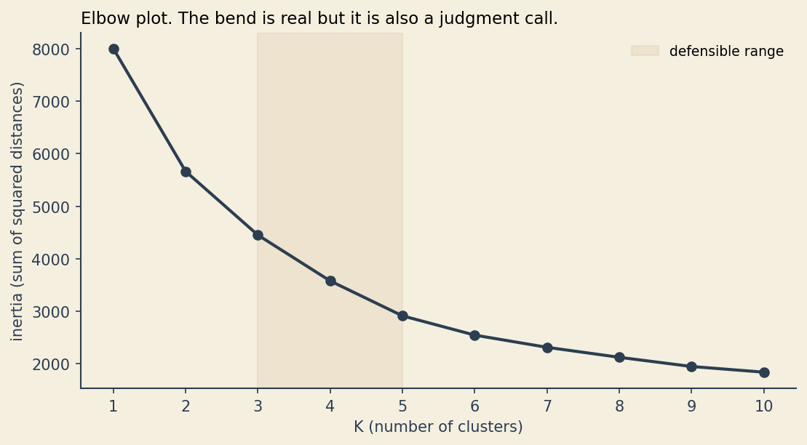
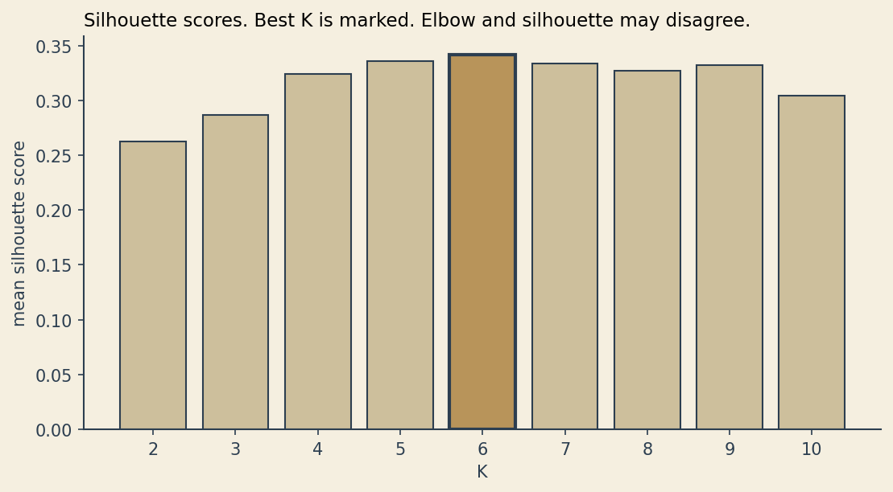
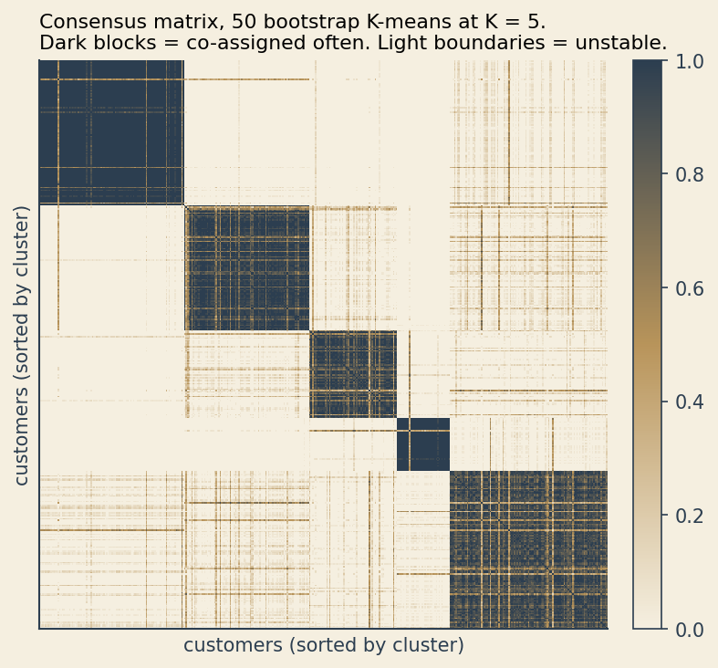
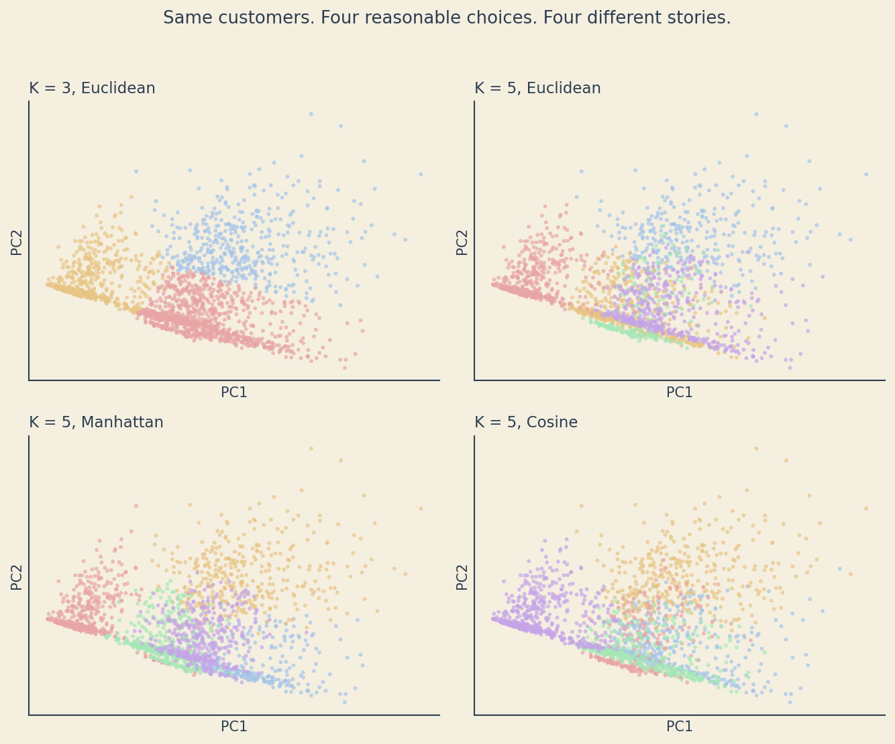
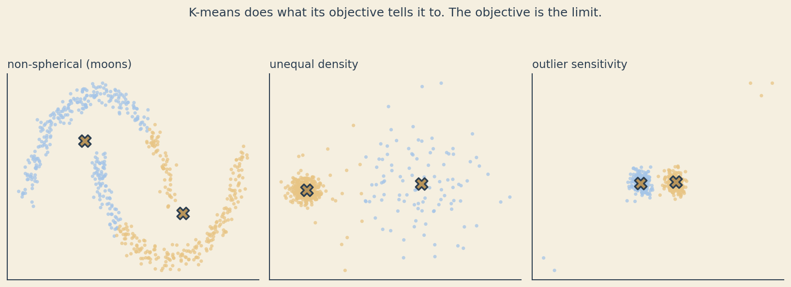

How Machines See People
An honest story about what cluster analysis is, how it works, and where it lies.
For the curious
The story above is the human version. This section is the technical version. Read whichever serves you. If you came for the math, this is where it lives.
The objective function
K-means optimizes one quantity. For data points \(x_1, \ldots, x_N\) and \(K\) centroids \(\mu_1, \ldots, \mu_K\), with \(z_{ik} = 1\) when point \(i\) is assigned to cluster \(k\) and \(0\) otherwise:
\[J = \sum_{i=1}^{N} \sum_{k=1}^{K} z_{ik} \, \lVert x_i - \mu_k \rVert^2\]
The algorithm alternates between two steps. Fix the centroids, then choose each \(z_{ik}\) to minimize \(J\) (assign every point to its nearest centroid). Fix the assignments, then choose each \(\mu_k\) to minimize \(J\) (set every centroid to the mean of its assigned points). Each step is guaranteed to either lower \(J\) or keep it the same. The process is guaranteed to converge.
It is not guaranteed to converge to the lowest possible \(J\). K-means finds a local minimum that depends on where the centroids were initialized. Two reasonable people running K-means on the same data with different random seeds can land on different clusterings, both locally optimal.
This is the formal mirror of the four choices Lina was making implicitly: \(K\) (how many centroids), the features in \(x\) (which dimensions to measure), the norm in \(\lVert \cdot \rVert\) (which distance metric), and the slice of data she sampled (which time window). Change any of these and you change \(J\), and you can change which local minimum the algorithm finds.

A worked example
Synthetic streaming-service customers. Four features per customer: weekly watch hours, genre variety, monthly spend, and number of devices. Five underlying groups generated with different means and spreads. Two thousand customers in total.
import numpy as np
import pandas as pd
from sklearn.cluster import KMeans
from sklearn.preprocessing import StandardScaler
from sklearn.decomposition import PCA
# X is a (2000, 4) array of watch_hours, genre_variety, monthly_spend, device_count
X = StandardScaler().fit_transform(X)
km = KMeans(n_clusters=5, n_init=10, random_state=7)
labels = km.fit_predict(X)
# project to 2D so we can see what the algorithm did
pca = PCA(n_components=2).fit(X)
XY = pca.transform(X)
centroids_xy = pca.transform(km.cluster_centers_)Standardizing matters. Without it, monthly_spend (range roughly 0 to 60) would dominate device_count (range 1 to 5) purely because of unit choice. Standardization puts every feature on the same scale so the Euclidean distance treats them as equally important. This is itself a choice.

The elbow method
Run K-means for \(K = 1, 2, \ldots, 10\). Plot \(J\) at the converged solution against \(K\). As \(K\) increases, \(J\) has to decrease (more centroids means each point is on average closer to one of them). What you are looking for is a “bend” where adding another cluster stops buying you much.
In textbook plots the elbow is obvious. In real data it is almost always ambiguous. The chart below shows the elbow for the synthetic dataset. There is a defensible argument for \(K = 3\), \(K = 4\), or \(K = 5\).

Silhouette scores
The silhouette score for a point compares its average distance to the points in its own cluster against its average distance to the points in the nearest other cluster. The result is in \([-1, +1]\). Positive values say the point is closer to its own cluster than to any other. Negative values say it would be better off elsewhere. The mean silhouette across all points gives one number per choice of \(K\).
Silhouette and elbow can disagree, and often do. When they do, you have to choose what you are optimizing for, and write that decision down.

Stability via bootstrap
This is the test that would have saved Lina in the story above.
Resample the data with replacement. Run K-means on the bootstrap sample. Record, for every pair of customers, whether they ended up in the same cluster. Do this fifty times. For each pair, the fraction of bootstrap runs in which they were co-assigned is their consensus score.
If the clusters are real structure in the data, customers should be co-assigned almost every time. If the clusters are an artifact of sampling noise, the consensus matrix will be fuzzy.
Sort the matrix by a reference clustering and look at the result. Sharp dark blocks on the diagonal say the clusters are stable. Pale boundaries between blocks say the algorithm is uncertain where to draw the line.

If you only run one clustering and report the personas, you have no idea whether they are real or whether you would have invented different personas given a different draw of the data.
Same data, four stories
The most uncomfortable plot in this post. Same 2000 customers, four reasonable analytical choices, four different clusterings.

Each of these clusterings could be defended. None of them is wrong. They are different answers to slightly different questions. The marketing team that builds five segments off the K = 5 Euclidean plot will tell a different story than the team that builds three segments off K = 3.
Where K-means breaks
K-means is doing exactly what its objective tells it to do. The objective just does not match what we want from a clustering in every situation.

The crescent-moons example is famous. K-means assumes clusters are roughly spherical and roughly equally sized in feature space. Crescents are neither, so K-means cuts each moon in half along the boundary that minimizes \(J\). The unequal-density example shows the same problem from a different angle: when one true cluster is much tighter than another, K-means tends to split the dense cluster and merge the sparse one to balance variance. The outlier example shows what happens when a few extreme points pull centroids away from where the mass of the data lives.
None of these are bugs. K-means is optimizing \(J\). The complaint is that \(J\) is not the thing we wanted.
Alternatives
DBSCAN. Density-based clustering. Finds clusters as connected regions of high density, marks low-density points as noise. Handles arbitrary cluster shapes and is robust to outliers. The choices move from \(K\) to two new parameters: a neighborhood radius and a minimum number of points to count as a dense region. Different choices, still choices.
Hierarchical clustering. Builds a tree of nested groupings. You can cut the tree at any level to get any number of clusters, and you can see how clusters merge as you relax the threshold. The choices move to the linkage rule (single, complete, average, Ward) and the cut height. The tree itself is a useful artifact even if you never commit to one cut.
Gaussian mixture models. Each cluster is a Gaussian distribution with its own mean and covariance, so clusters can be elongated, rotated, or differently sized. Fit by expectation-maximization. The choices move to \(K\), the covariance structure (full, diagonal, tied), and the assumption that the components really are Gaussian. The model also gives every point a soft probability of belonging to each cluster rather than a hard label.
Switching algorithms does not eliminate the problem from the story above. It moves the choices around. You still have to defend them in writing.
A defensible practice
A checklist that survives most clustering projects.
- Standardize features before clustering, or have a written reason not to.
- Try multiple \(K\) values. Show both elbow and silhouette plots. Note where they agree and where they do not.
- Run K-means with multiple random initializations (
n_init = 10or higher). Report the best result and a sense of the variance across initializations. - Bootstrap the data, run the clustering many times, and look at the consensus matrix. Report stability alongside the clustering.
- Label the output as constructions, not discoveries. The personas exist because you built them. They do not exist in the data without you.
- Defend every choice in writing. If you cannot defend a choice, change it or document why you made it anyway.
Further reading
- Hastie, T., Tibshirani, R., and Friedman, J. The Elements of Statistical Learning, Chapter 14 (Unsupervised Learning). The standard graduate-level reference.
- Aggarwal, C. C. (ed.) Data Clustering: Algorithms and Applications. A broader survey of clustering methods, including density-based and graph-based approaches.
- Monti, S. et al. (2003). “Consensus Clustering: A Resampling-Based Method for Class Discovery and Visualization of Gene Expression Microarray Data.” The original paper on the bootstrap-stability approach used above.
- Hennig, C. (2015). “What are the true clusters?” Pattern Recognition Letters, 64. The most honest paper on this question. Worth reading twice.
The code that generated these charts lives in the notebooks folder of the portfolio repo.